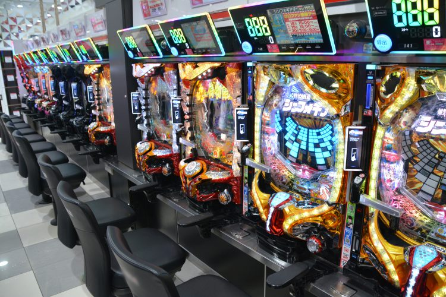
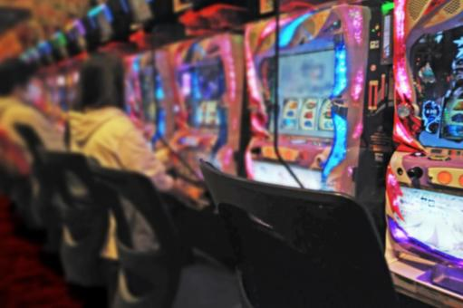
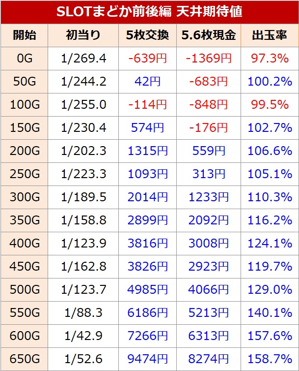
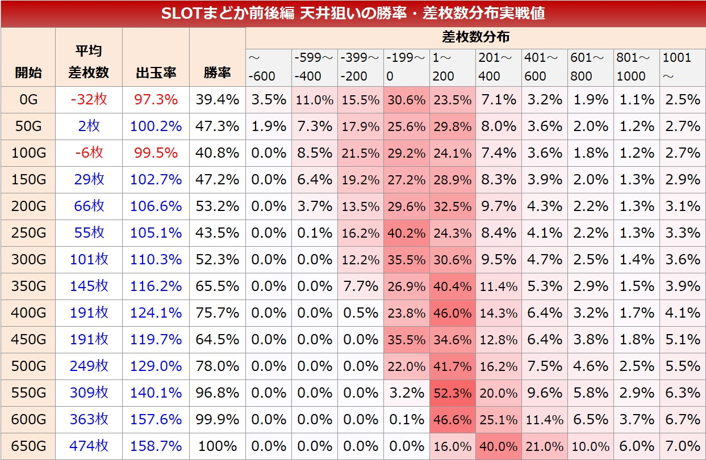
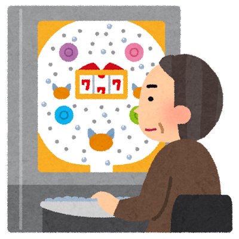
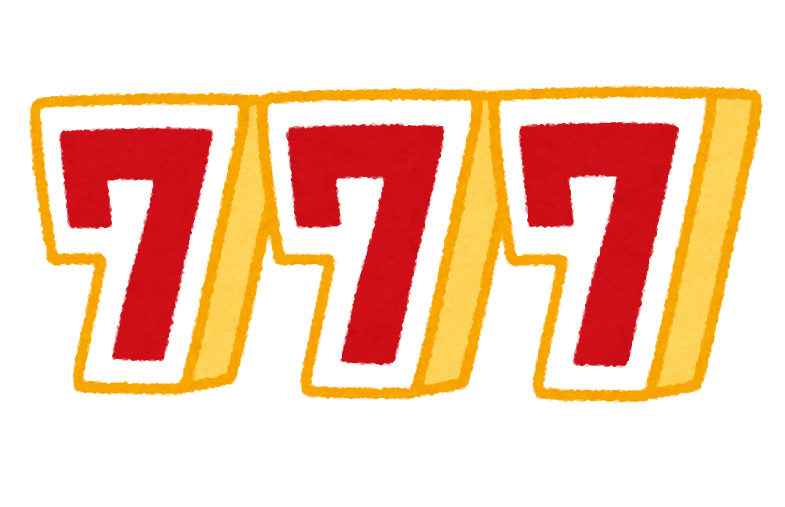
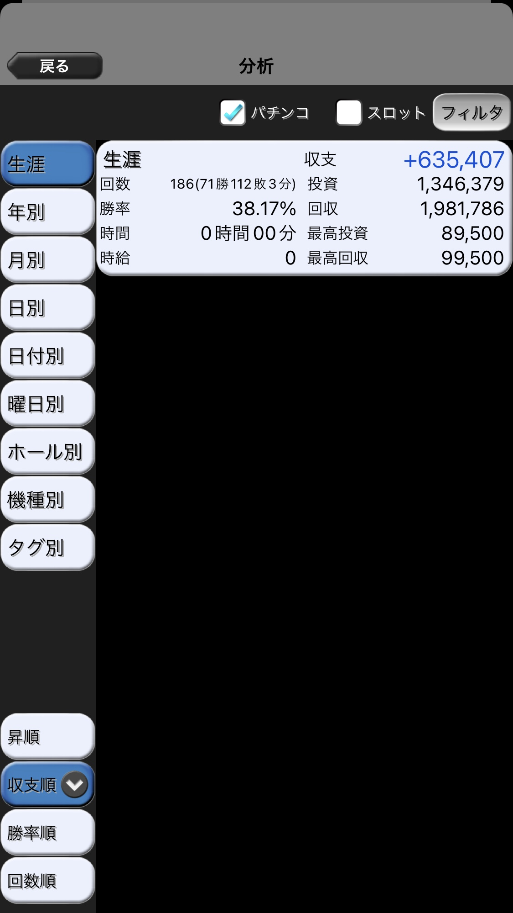
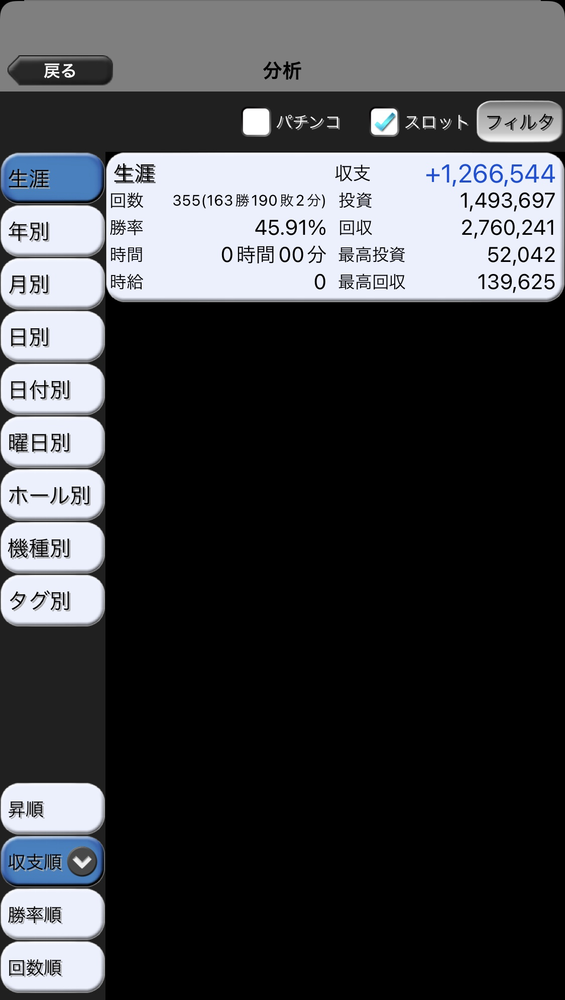

<!DOCTYPE html>
<html lang="ja">
  <head>
    <meta charset="utf-8">
    <meta name="viewport" content="width=device-width,initial-scale=1.0,minimum-scale=1.0">
    <title>パチンコ・スロットで稼ぐ方法</title>
    <meta name="description" content="html,cssの勉強をしながら役に立つ情報を発信していきたいと思います。">
    <link rel="stylesheet" media="(min-width: 640px)" href="css/styles.css">
    <link rel="stylesheet" media="(max-width: 640px)" href="common/styles/style_mobile.css">
  </head>
</html>
<body>
  <header>
    <h1>パチンコ・スロットで稼ぐ方法</h1>
      <div class="container">
        
        
      </div>
  </header>
  <main>  
    <nav>
      <div class="co">
        <h2>contents</h2>
        <ul class="center">
          <li><a href="#win">なぜ、パチンコ・スロットで勝てるか</a></li>
          <li><a href="#pawin">パチンコの勝ち方</a></li>
          <li><a href="#suwin">スロットの勝ち方</a></li>
          <li><a href="#iwin">私の収支、立ち回り</a></li>
        </ul>
      </div>
    </nav>
    <h2 id="win" class="border">なぜ、パチンコ・スロットで勝てるか</h2>
    <div class="padding">
      <p>結論から言うと、<span>期待値がプラスの台を打っている</span>からです。
      </p>
      <p>勝っている人は期待値がプラスの台を打っていて、負けている人は期待値マイナスの台を打っています。</p>
      <p>後で説明する天井狙いの期待値で、まどかまぎか4という機種の期待値を例に見ていきます。</p>
    <div class="container">
      
      
    </div>
      <a href="https://slotjin.com/tenjoukitaichi/madokazenkouhen/">期待値見える化様</a>引用
      <p>これを見ると、期待値マイナスでも勝てるし、期待値プラスでも負けることがわかります。</p>
      <p>この台はスロットの中では結構荒い方だと思います。</p>
      <p>結構拾えるのが250ゲームですが、正直負ける確率の方高いし打ちたくねーって言いながら打ってます。</p>
      <p>ですが、やればやるほどトータル収支がこの値に近づいてくるので、しっかりと期待値プラスの台を打ちましょう。</p>
      <p>そして、パチンコ・スロットにおいて期待値プラスの台を打つ方法を大きく分けると、</p>
    <section>
      <p>パチンコ</p>
      <ul>
        <li>釘狙い</li>
        <li>遊タイム狙い</li>
      </ul>
      スロット
      <ul>
        <li>設定狙い</li>
        <li>天井狙い、ゾーン狙い</li>
      </ul>
    </section>
      があります。
    </div>
    <h2 id="pawin" class="border">パチンコの勝ち方</h2>
     <br>
    <h3>釘狙い</h3>
    <div>まず、パチンコにはボーダーというものがあります。パチンコでは千円で何回回るかで期待値を出すのですが、期待値が0になる千円あたりの回転数をボーダーといいます。</div>
     <p>このボーダーよりも回る台を打つことで、期待値がプラスになります。</p>
     <p>これは、釘を見てどのくらい回るかを判断して打ちます。</p>
    <h3>技術介入</h3>
     <p>パチンコには止め打ち、オーバー入賞などの技術介入があり、台によりますが、期待値に大きく関係します。</p>
     <p>わーさんというyoutuberがとても上手なので、参考にするといいと思います。</p>
    <h3>遊タイム狙い</h3>
     <p>1/300の台で、遊タイムまであと1回転の台があったとします、まあ打ちますよね。</p>
     <p>では、残り300回転だったら?残り500回転だったら?期待値はあるのでしょうか。</p>
     <p>これは残りの回転数と1000円あたり何回回るかで期待値を出すことができます。調べれば色々な方が期待値を出していますが、私はいつもだくおさんという方のツールを利用させて貰っています。</p>
    パチンコのメリットとしては、
    <ul>
      <li>期待値マイナスの台を打つ回数が少ない</li>
      <li>技術介入で他の人と差をつけられる</li>
      <li>遊タイム狙いのとき、一台でとても高い期待値の台を打つことができることが多い</li>
    </ul>
    デメリットは、
    <ul>
      <li>時給がスロットに比べて低くなりやすい</li>
      <li>釘読み、技術介入が初心者には難しい</li>
      <li>収支が荒れやすい</li>
    </ul>
    などです。
    <h2 id="suwin" class="border">スロットの勝ち方</h2>
    <br>
    <h3>設定狙い</h3>
      <p>スロットには6段階の設定があり、設定6を打てたときは時給が5000円近くになったりします。</p>
      <p>ですが、明確なデメリットがあり、低設定の期待値がマイナスの台を打つ可能性があります。</p>
      <p>店がどのようなところに設定を入れるかを予想する必要があり、上手い人と下手な人では、高設定が打てる確率や低設定に見切りをつける速さなどでかなり差が出ます。</p>
      <p>店の傾向が掴めるまでは、天井狙いをするのが無難だと思います。</p>
      <p>がりぞうさんという方がとても上手なので、参考にするといいと思います。</p>
    <h3>天井狙い、ゾーン狙い</h3>
      <p>スロットの天井狙いは、パチンコの天井狙いよりも少し複雑です。</p>
      <p>なぜかというと、当たりやすいゲーム数(ゾーン)や、絶対に当たらないゲーム数、さらに当たりやすいゲーム数などを決めるモードなどがあり、当たり確率だけで見ることができないからです。</p>
      <p>最近の台は複雑な台も多くなってきているように感じます。</p>
      <p>ハマっている台を抑えて調べるのを繰り返していって覚えるのもいいと思いますが、凄く大きい期待値を取れるのは多少複雑な台だったりするので、自分が行くホールの台やおいしい台をあらかじめ調べることをおすすめします。</p>
      <p>もう打つ機会は少ないですが、鉄拳デビルという機種が覚えていると大きい期待値を取れる代表なのかなと思います。</p>
      <p>最近だとアネモネという機種がとてもおいしかったですね。</p>
      <p>また、ゾーンも狙うことができます。
      これも覚えるしかないのですが、例を挙げると、まどかまぎか4の200ゲーム、サラリーマン番長2の200ゲームゾーンなどがあります。
      </p>
      <p>スロプロ狐さんというyoutuberがとても上手なので、参考にするといいと思います。</p>
   スロットのメリットとしては、
    <ul>
      <li>時給が高い</li>
      <li>天井狙いできる台が多い(パチンコは遊タイムなしの台も多い)</li>
      <li>収支がパチンコに比べて荒れにくい</li>
    </ul>
    デメリットとしては、
    <ul>
      <li>設定狙い、天井狙いが最初は難しい</li>
      <li>設定狙いでは、期待値がマイナスの台を打つことが珍しくない</li>
    </ul>
    などです。
    <h2 id="iwin" class="border">私の収支、立ち回り</h2>
      <p class="padding">立ち回りはそのときどの立ち回りが一番期待値を積めるかで変えています。</p>
      <p>最近では天井狙い、遊タイム狙いをし、できるときは設定狙いをするのが一番稼ぐことのできる立ち回りだったのではと思います。</p>
      <p>ですが、2月以降置かれている台がかなり変わるため、立ち回りも変わってくると考えられます。</p>
      <p>2月以降はパチンコの釘狙いと天井狙い、遊タイム狙いが中心の立ち回りになるのかなと予想しています。</p>
      <p>ただ、収支が荒れたくない方や資金力があまりない方はスロット中心の立ち回りをおすすめします。</p>
    <div class="container">
      
      
      
    </div>
    <p>私の収支は、軍団での収支は別のアプリで管理しているのでそれを足すと220万ほどです。</p>
    <p>最近は稼働がかなり減ってきているので、実質一年ほどで稼いでいます。</p>
    <p>時給は正直全然わからないですが、平均したら1500円から1700円くらいだと思います。</p>
    <p>最近は期待値が積みやすい日しか行っていないのでもしかしたら2000円超えてるかもしれません。</p>
    <p>1400円以上はほぼ確実にあると思います。</p>
    <p>パチンコ・スロットでは学生にしてはかなり楽に多くのお金を稼ぐことができると思います。
    <br>html,cssの勉強がてらこのような情報を出していきたいと思うので、よろしくお願いします。</p>
  </main>
</body>